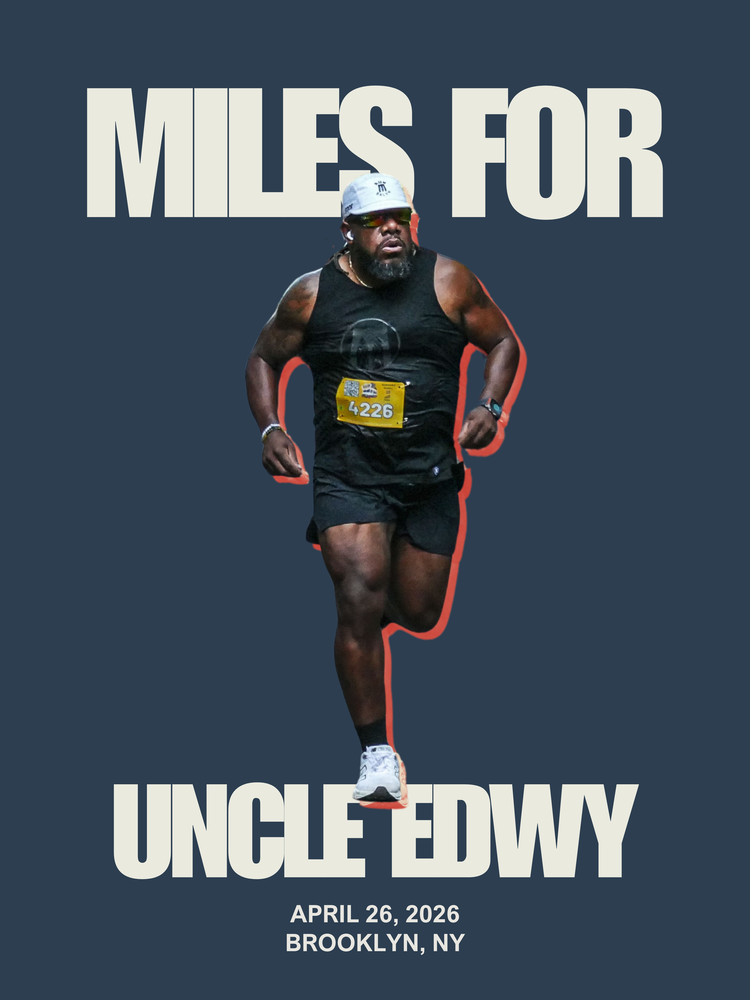
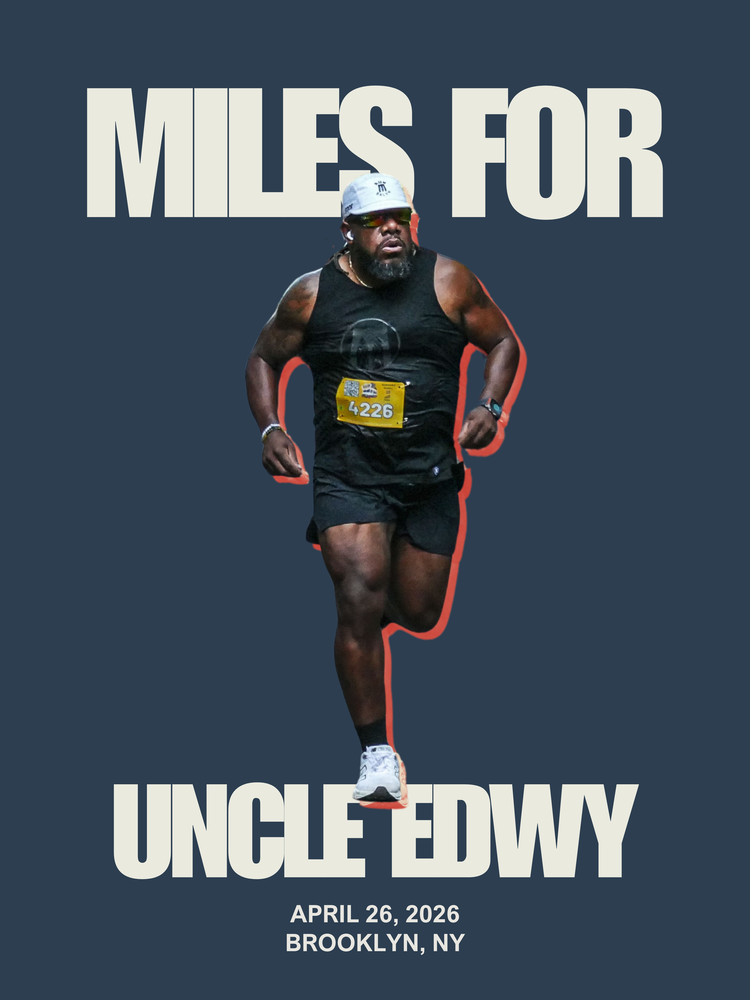

St. Jude Children's Research Hospital
Because no child should face cancer alone, and no family should face financial ruin while fighting for their child's life. St. Jude ensures families never receive a bill for treatment, travel, housing, or food.
Forever in Our Hearts | October 22, 1957 - February 26, 2021
Uncle Edwy was more than family, he was pure joy. The source of our loudest laughter, and the creator of our most cherished memories. When colorectal cancer took him from us in 2021 at just 63 years old, we lost not just an uncle, but our favorite storyteller, our biggest cheerleader, and the heart of every family gathering.
He was taken from us far too soon. At 63, Uncle Edwy had so much more life to live, so many more moments to share, and so much more love to give. His story is not unique. It's the same heartbreaking story that countless families have lived through. This shared pain, this collective loss, is exactly why we cannot stand still. We must push forward, we must fight for a cure, and we must ensure that fewer families experience the devastation we felt. That's why I'm running. Not just in memory of Uncle Edwy, but for every family who has said goodbye too soon.
This race is my promise to him that his loss will not be in vain. Every mile honors the life he should still be living. Every dollar raised fights for the cure that could save the next family from our heartbreak.

Running 13.1 miles to honor Uncle Edwy's memory
When Uncle Edwy passed away from colorectal cancer in 2021, my family was devastated. But in our grief, I found purpose. I found a way to turn our pain into something positive, to honor his memory by helping others facing the same battle he fought so bravely.
That's why I'm running 13.1 miles through the streets of Brooklyn. Every stride is a prayer for those still fighting. Every breath is a promise to Uncle Edwy that his legacy will live on through our efforts to support cancer research and treatment.
I'm raising funds for two incredible organizations that represent hope for families facing cancer:
Because no child should face cancer alone, and no family should face financial ruin while fighting for their child's life. St. Jude ensures families never receive a bill for treatment, travel, housing, or food.
Advancing colorectal cancer research in Uncle Edwy's name. Every dollar goes toward groundbreaking research and compassionate care, working to prevent other families from experiencing the heartbreak we did.
Uncle Edwy can't be here to see the finish line, but his spirit will carry me through every mile. Together, we can transform his loss into lasting hope for countless families.
Follow along as I train for the Brooklyn Experience Half Marathon and honor Uncle Edwy's memory with every mile.

Your donation does more than support my race—it honors Uncle Edwy's life and helps families fighting cancer today.
Choose to support St. Jude Children's Hospital, Memorial Sloan Kettering's colorectal cancer research in Uncle Edwy's name, or split your donation between both. Every contribution is a step toward a world without cancer.
🔒 Secure donations processed directly through St. Jude and MSK
💯 100% of your donation goes to cancer research and treatment
❤️ Tax-deductible charitable contributions
Support families so they can focus on what matters most: helping their child live. No family ever receives a bill from St. Jude for treatment, travel, housing, or food.
Donate to St. JudeFund groundbreaking colorectal cancer research in Uncle Edwy's memory. Help MSK continue their life-saving work and prevent other families from experiencing our loss.
Donate to MSKYou can donate directly by clicking the donation buttons above. Choose to support St. Jude Children's Hospital, Memorial Sloan Kettering, or both. All donations are processed securely through the respective organizations.
The Brooklyn Experience Half Marathon is scheduled for April 26, 2026 in Brooklyn, New York.
Yes! Both St. Jude Children's Research Hospital and Memorial Sloan Kettering Cancer Center are 501(c)(3) nonprofit organizations, so your donations are tax-deductible to the extent allowed by law.
100% of donations go directly to the organizations you select. St. Jude uses funds for childhood cancer research and treatment. Memorial Sloan Kettering directs funds to colorectal cancer research and patient care.
Absolutely! Please use the social sharing buttons at the top of the page to spread the word. Every share helps us reach more supporters and get closer to our goal.
Sign up for email updates below to receive regular updates on training progress, fundraising milestones, and race day preparations!
Get updates on training progress, fundraising milestones, and race day! Join the Miles For Uncle Edwy community.